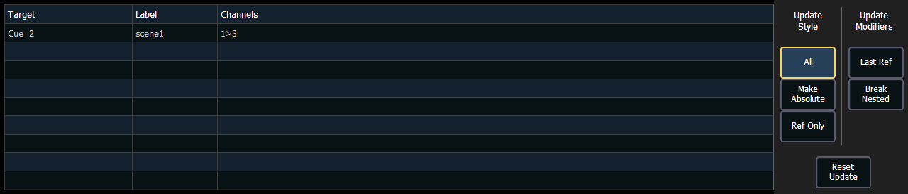

When you press [Update], a dialogue box will open in the CIA. Update styles and modifiers for those styles will be divided in the Update Dialogue Box.
Note: Default Update Modes are set in Setup>User>Record Defaults. See Record Defaults for more information.
Note: {By Type} is available as a softkey. See Updating By Type Presets for more information.

The dialogue box also provides you with a listing (by record target) of what channels/parameters will be impacted by the update instruction. If the channel contains a reference in the cue, it is indicated. Channels that have been manually added to the stage output, but are not overrides of an active cue will update to the selected cue list.
Once you have made a selection from the available options, press [Enter] and the target will be updated.
Targets may be deselected from the dialogue box, excluding them from the update without specifying the target number, for example, [Update] {Color Palette} [Enter].Selecting a line by clicking or pressing it can also be used to deselect a target.
For Eos Family devices that do not have a [Snapshot] hardkey, there is a {Snapshot} softkey that is available in the Update display.